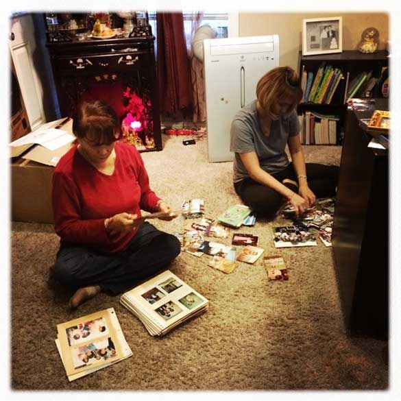

The Beginning


As an infant, Pete Pin leaves a transitional refugee camp in the Philippines with his parents to start their lives in Stockton, California, USA.
19,851
Cambodian refugees enter the U.S.
Discovery
Stockton, California

Pete interviews his grandmother for the first time. Here, he learns of his family’s history in the Cambodian Killing Fields.
Through this interview, Pete learns of one of only two existing photographs saved by his family from before the Killing Fields.

Pete makes his first portrait of his grandmother, visualizing the intergenerational dialogue that has occurred surrounding one of his family’s only remaining archival photographs.

“It was as if this window was opening in front of me...to a life that my mother and family had in a place that I am totally disconnected from.”
Through the discovery of the photo, Pete sees photography in a new light. The photo enabled him to connect to a past he felt disconnected from.
Pete realizes he needs to see beyond the centrality of the image - that photos can serve as a bridge to connect youth to their family’s story.
Traditional Photography

New York City,
New York
Pete works extensively to document the Cambodian diaspora in various east coast cities and holds exhibitions in non-traditional art spaces; community centers and the lobby's of his partners. These early community partnerships help the project expand in later phases.

Shorty, 28, shows his Killing Fields tattoo in Philadelphia, Pennsylvania in April

Kaylee Tuy, 2, and Kevin Vann, 4, in the living room of their Lowell Massachusetts home in February
Pete receives a fellowship at the Magnum Foundation and begins to photograph in-depth in the Bronx
While photographing in the Bronx, Pete partners with Mekong New York and the Indochinese Mental Health Clinic. Pete experiments with his first community installation in the basement of a Cambodian American home in the Bronx, inviting community members and their children.

Caption Needed Here
Although Pete’s documentary photographs were engaging to the younger Cambodian generation, they did not resonate as strongly with elders in the community.
Rethinking the Form
With a successful Kickstarter campaign, Pete is able to continue photographing and meeting with Cambodian families across the United States.
The Ung family reviews ephemera produced in refugee camps kept in a box in the garage. Children are seeing the family’s artifacts for the first time.
“My experience with my grandmother, where we engaged with our shared past through images can be performed in the homes of other Cambodian Americans. The act of photographing can produce space for dialogue around family ephemera brought before the war or produced during stays in refugee camps.” - Pete Pin
Building on the experience with the Ung family, Pete facilitates additional family interactions focused on family history and ephemera.
The Yang family reviews family ephemera prior to a portrait session
“The key is not the image itself, it’s the process of finding that photographic artifact, and then connecting with their elders about the embedded memories within the image, and then taking ownership, being a guardian of their families story, and to be able to narate their stories they gained through the intergenerational experience. That’s the key, that’s what’s important, thats what’s powerful to me.” - Pete Pin
Partnering with local community groups, Pete coordinates participatory workshops where youth search of photographic ephemera of their families journey to the US.

Pete works with the Lowell Community Health Center’s Journey to Healing Program, which serves Cambodian youth whose family may have experienced trauma during the Killing Fields. Pete conducts workshops where youth search for ephemera at home connected to their family story.
Pete learns youth must navigate hierarchies at home in which elders may not take them seriously. However, the very act of asking family members about ephemera can lead to newfound discoveries and meaningful conversations about family story.
Sharing insights gained from home collectively in a workshop is a powerful experience.
Refining the Workshops
With additional funding, Pete works with a design team to refine the workshop experience and create materials to better prepare participants for interviewing family members in positive and trauma-informed ways. The workshops are increasingly powerful but Pete realizes that diptychs aren't enough.

CAPTION NEEDED.
"what participants were learning through the process was much more than two images or two stories. You can’t constrain people if the story they want is more expansive than that, and the places they want to go is more expansive than that.”
We need to partner with organizations with mental health resources and liaisons or staff, and have a third party sit in during group discussions to safeguard against re-introduction of trauma, also, having the workshops within an organization is critical to connecting people in a space and with a community partner that they can continually engage with.
Need to be sensitive to the needs of elders who were interviewed and photographed, need to integrate them into the collective dialogue, while still respecting the space for youth to have conversations among themselves.
Beyond the Diptych

Participants works with their elders to tell their family journeys. Broader and more nuanced stories of diaspora surface in the workshops. A mobile, generative installation is created. Two large-scale maps -- one of Cambodia and one of the U.S. -- became the poles through which participants physically map their families’ journey from Cambodia to America.
CAPTION NEEDED.
"what participants were learning through the process was much more than two images or two stories. You can’t constrain people if the story they want is more expansive than that, and the places they want to go is more expansive than that.”